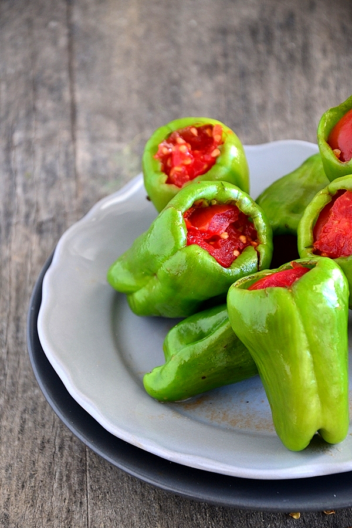

....Zeytinyağlı Biber Dolması....
HOŞGELDİNİZ!

Malzemeler;
- 3 su bardağı pirinç
- 1 büyük kuru soğan
- 3 adet domates
- 1 yemek kaşığı domates salçası
- 1 su bardağı zeytinyağı
- 2 su bardağı kadar soğuk su
- bir tutam taze nane
- bir tutam dereotu
- bir tutam maydanoz
- karabiber
- kimyon(az)
- yenibahar(az)
- kuru nane
- pul biber
- tuz
- dilerseniz 1-2 diş ince doğranmış yada rende sarımsak
Dolma içi tarifi ve yapılışı;
- Pirinç ılık tuzlu su ile 10 dakika kadar ıslatılır, süzülür, yıkanır.
- Kuru soğan çok ince olacak şekilde doğranır.
- Maydanoz ,nane ,dereotu ayıklanır incecik doğranır.
- Bir kabın içerisine pirinç alınır. Üzerine ince bir şekilde doğradığımız kuru soğan, rendelenmiş domates ,domates salçası ,zeytinyağı ,baharatlar ve taze otlar eklenir.Elimizle iyice karıştırılır. Son olarak taze otlar ilave edilir, pirincin
üzerini hafif geçecek kadar su eklenir.
- Damak tadınıza göre lezzetine kaşıkla bakarak baharatını ölçülendirebilirsiniz. Dolma içi doldurulmak üzere hazırdır.
- Dolmalık biberler yıkanır tohumlu sap kısmı içe doğru baskı yapılarak çıkartılır. Biberin ağız kısmı avucumuzun ortasına vurularak tohumların dökülmesi sağlanır. İç kısmının iyice temizlendiğine dikkat etmek gerekir, zira içerisinde yuva
yapmış minik kurtçuklar bile olabilir.
- Dilerseniz içini de tekrardan yıkayıp ağız kısmı alt tarafa gelecek şekilde bırakarak suyunun süzülmesini sağlayabilirsiniz.
- Suyu süzülen dolmalık biberlerin içi tatlı kaşığıyla üzerinde 1 parmak boşluk kalacak şekilde doldurulur. Hafif sulu doldurmaya özen gösteriniz bu şekilde dolmanın istediğiniz kıvamda piştiğini göreceksiniz.
- Dolmalık biberlerin üzerine büyüklüğüne göre domates doğranıp kapatılır, tencereye dizilir. Bir kaseye 1 tatlı kaşığı kadar salça, 2 çorba kaşığı kadar zeytinyağı, 3-4 su bardağı kadar su eklenip karıştırılır. Tencerenin kenarından bu
su tencereye boşaltılır. Eklediğimiz su dolmaların boyunu geçmemeli daha aşağısında kalmalıdır. Tencerenin kapağı kapatılıp ocağa koyulur. Kaynayınca hemen ocağın altı kısılıp kısık ateşte biberler yumuşayıncaya kadar pişmeye bırakılır.
Afiyet Olsun...